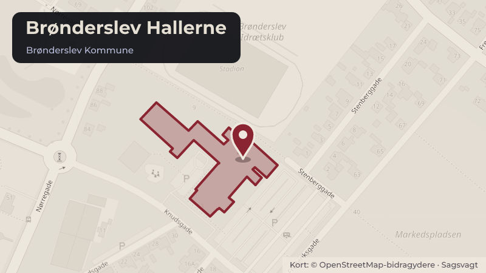

Besluttet 14. september, Beskæftigelses- og Uddannelsesudvalget, Brønderslev
Orientering om forestående afholdelse af uddannelses- og fritidsjobmessen
Sagsforløb: BE/BS UngeCenter Brønderslev afholder en uddannelses- og fritidsjobmesse for elever i 8.-10. klasse og deres forældre den 3. november 2026 i Brønderslev Hallerne. 20-25 uddannelsesinstitutioner og 20-25 lokale virksomhederne forventes at deltage med en stand på messen.
Skoler og børnUnge og uddannelseÆldre og sundhedErhverv og job
Steder i sagen: Brønderslev Hallerne

Kort fortalt
- Hvem
- Beskæftigelses- og Uddannelsesudvalget, Brønderslev Kommune
- Hvornår
- Mandag 14. september 2026
- Status
- Besluttet. Orienteringen taget til efterretning.
Læs hele sagen Kommunens egen tekst
Sagsfremstilling
UngeCenter Brønderslev er i gang med planlægningen af årets uddannelses- og
fritidsjobmesse. Det er tredje år, at Brønderslev Kommune afholder en messe for elever i 8.-10.
klasse og deres forældre. Det foregår i år den 3. november 2026 i Brønderslev Hallerne.
Formålet med uddannelses- og fritidsjobmessen er:
At give inspiration til de unge og deres forældre til valg af ungdomsuddannelse.
At give mulighed for, at de unge og lokale virksomheder kan møde hinanden til en snak
om fritidsjob og evt. lærlingeplads.
20-25 uddannelsesinstitutioner forventes at deltage på messen, heriblandt:
EUD, EUX
STX, HHX, HTX
Forsvaret
SOSU Nord
FGU Vendsyssel
10. klassecentre
Derudover vil 20-25 lokale virksomheder deltage med en stand på messen.
Brønderslev Ungdomsskole deltager på messen med information om kurser i at være
fritidsjobber på plejeområdet og i vuggestuer og børnehaver, som de tilbyder.
Jobpatruljen, som en række fagforeninger står bag, vil også deltage med henblik på
information om fritidsjobberes rettigheder i forhold til løn- og arbejdsvilkår.
Elever og forældre bliver inviteret til at deltage i messen via Aula, og Ungdommens
Uddannelsesvejledning (UU) orienterer om tilbuddet på skolerne. UU har en særlig
opmærksomhed på de elever i specialklasser, som kan have gavn af at deltage. Derudover
henvises til en messe for børn med særlige behov i Aalborg i oktober 2026. UngeCentrets IPSkonsulenter, som er en del af Ungesporet, vil også deltage på messen.
Erhvervsskoler, gymnasier og HF vil holde oplæg på messen i særskilte lokaler om deres
uddannelsestilbud.
Personalemæssige konsekvenser
Ingen.
Tidligere beslutning
Beskæftigelses- og Uddannelsesudvalget har den 9. marts 2026, pkt. 7, besluttet, at
uddannelses- og fritidsjobmessen i 2026 afholdes den 3. november i Brønderslev-hallen.
Indstilling
Fagforvaltningen for Børn, Unge og Beskæftigelse indstiller, at Beskæftigelses- og
Uddannelsesudvalget og Børne- og Skoleudvalget tager orienteringen til efterretning.
Beslutning
Orienteringen taget til efterretning.
Malene Fisker (V) var fraværende.
Kilde: Brønderslev Kommune, Beskæftigelses- og Uddannelsesudvalget, referat fra mødet mandag 14. september 2026, punkt 4. Læs den originale sag hos kommunen.